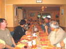
Vendredi soir, Hirel... Le CVCCeltique a déjà bien travaillé avant notre arrivée. Mais ce soir, dîner tranquille au restaurant avec suivi des arrivants : "Ils sont à moins de 2 h, d' 1 h"...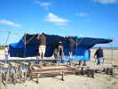
On termine les équipements, les bâches sont d'un poids incroyable...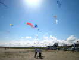
Mais les cerfs-volants n'attendent pas, et il y a déjà un beau tableau en l'air...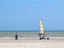
Philippe Burger a amené sa valise et a monté son Blo-kart qu'il prête généreusement à tout le monde ! Eh bien il est solide, c'est du sérieux, personne ne l'a cassé, et pourtant !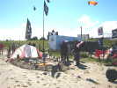
Les Pirates sont là et ont aménagé un bateau Casino avec table de jeux (c'est le thème cette année) !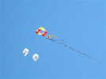
Dans le ciel, ça s'active ! Un Madiot-CVCF traîne vaillamment un paquet de queues au-dessus d'une boîte losangique...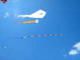
Plus haut que le pyro blanc, Bruno Claes a agrémenté son flow-form de sa belle queue dorée et y a ajouté une queue tubulaire bien gonflée et colorée...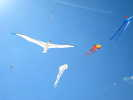
J'ai choisi mon Albatros 2, pour vérifier quelques modifs mineures. Après un peu de réglages à la main, il vole bien, mais pas encore parfaitement symétrique...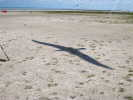
Sur le magnifique sable d'Hirel, la preuve qu'il vole au soleil !...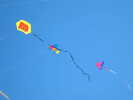
Un Rokka aux armes normandes (2 léopards), un Conyne à ailes multiples (à Pascal), et le delta de Christophe, limité mais si gentil et enthousiaste !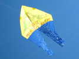
Une oeuvre pseudo-naïve, un hommage à la baie et au Mont !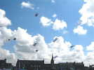
Oeuvre collective du CVCC : les cartes à jouer, chacun la sienne (ou plusieurs), réalistes ou inventées se déploient pour un envol simultané...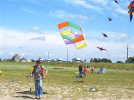
Daniel Crinier revient de faire de la photo avec son superbe Calomil !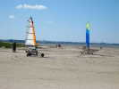
Les volontaires se relaieront toute la journée sur le Blo-kart. Ce qui intéresse Maxime (le fils de Jean-Michel le pirate), ce sont les tête-à-queue en dérapage !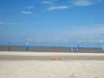
L'Ecole de Chars, elle, a tracé un parcours, mais il déborde un peu sur la lise, et au premier passage, ils se sont tous en... lisés jusqu'au moyeu !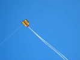
Un beau Pipa non-combattant, avec deux grands cerques blancs !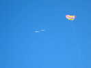
Avec Jean-Marc, nous effectuons un petit rapprochement, mais à 200 m de haut, c'est un peu osé (au sol, nous sommes à 40 m l'un de l'autre!) et Jean-Marc s'écarte vite ensuite...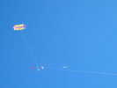
Christian Bécot fait de la photo sous son Wassèges (modifié, bien sûr, il modifie toujours...)...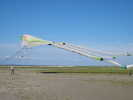
Vierzon a fait voler son gigantesque flow-form. Même si le vent n'est pas trop fort, Jacques a du mal à le descendre !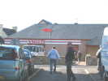
On appelle à la salle pour le dîner. François n'hésite pas et envoie son V13 directement sur le toit du magasin d'en face ! Après quelques efforts, on le laissera là pour la nuit, les filles nous réclament... pour l'ouverture des portes !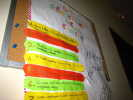
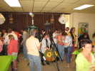
Claudine nous attend avec, dans l'aquarium aux marguerites, un punch solide qu'elle verse généreusement ! Claude a fait des prodiges de déco dans le thème des jeux...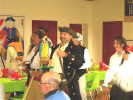
Les Pirates font une entrée en costume très remarquée ! Jean-Claude fait un personnage très crédible, avec son perroquet animé et parlant...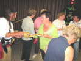
Les membres du CVCC en mettent un coup, et refusent qu'on fasse quoi-que-ce-soit pour les aider...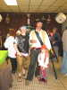
Jean-Michel a déguisé toute la famille !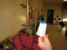
Philippe a réalisé de minuscules Codys, et il en offrira à la fin de la séance à des cervolistes méritants (moi, par exemple...) !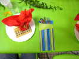
Le couvert a été préparé avec un soin extrême : nappe tapis vert, serviette dans le thème, pochette à couverts, bourse pleine d'écus (enfin, d'Euros en chocolat) !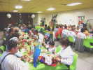
Ca fait une belle salle, et tout le monde est servi à la place !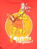
Patrick L'Higuinen portera tout le week-end des T-shirts décorés breton, comme celui-ci qui montre la Pamela Anderson Bigoudenne !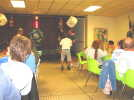
Fil rouge de la soirée : la loterie. Tout le monde a d'ailleurs un lot, il y a même des Gros Lots (consommables...), mais la roue de Claude ne tombe pas souvent dessus, il faudra improviser un tirage spécial !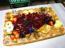
Le repas est couronné par un magnifique gâteau bavarois au nougat !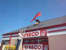
Dimanche matin, première tâche : le V13 de François en panne sur le toit ! Il n'y aura pas trop de boulot : monsieur Viveco a une échelle, et un voisin apporte une échelle de couvreur pour marcher sur les ardoises sans les casser !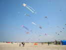
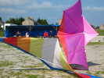
Vent léger et régulier au départ, on peut voler bas et proches... Mais faut pas exagérer ! Les 2 François n'ont plus qu'à démêler...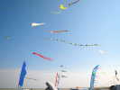
Le vent monte, c'est quand même un peu turbulent, les queues s'agitent dans tous les sens...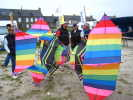
Le Roto de Joël est au sol, les 4 rotors emboîtés se cognent les uns aux autres par vent trop fort...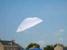
Jean-Claude a modifié son pseudo-Rokkaku en montant une vergue avant libre.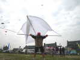
Mais il a utilisé des bouts de tube une peu fins, et ça casse, bien symétriquement...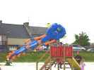
On revoit des 2 lignes gonflables disparus depuis un moment, avec lesquels leurs propriétaires caressent les enfants !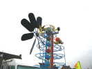
Joël a installé ses roule-baballes dont un que je n'avais pas bien détaillé : une balle va à droite, la suivante à gauche et se stocke jusqu'à ce que la troisième déclenche un petit train groupé !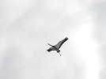
J'ai fait voler ma grue, je suis content, elle a bien volé jusqu'à 35 km/h de vent !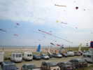
Il y a eu un passage couvert, mais ça s'est redégagé ensuite. Le parking est bien garni, ainsi que les 2 bas-côtés de la route...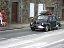
Une parade de voitures anciennes est passée sur la route, à grand renfort de Klacksons ! D'abord une 4 pattes...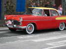
Puis une Américaine française de luxe, la Beaulieu de Simca !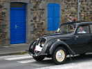
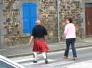
Il y a même eu des visiteurs qui ont traversé la Manche !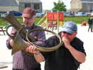
Un fana a apporté des cuivres qui ont un peu souffert, mais encore jouables. Tout le monde s'essaie à souffler dans le cor, pas si facile...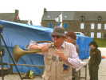
Le Président ne peut pas reculer, avec son coffre. Il souffle fort, mais rien ne sort, bizarre !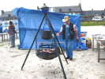
Claude a monté son barbecue d'escouade et a passé la matinée à nous cuire des saucisses et des côtes de porc ! Tout est précuit, mis au chaud dans la marmite, et re-grillé un coup au moment de servir...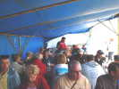
Déjeuner sous le barnum, à l'abri du vent et du soleil. C'est plus que largement prévu, on n'aura pas faim cet après-midi !